A backtest is a claim about the past made by someone who has seen the past. Everything in this part exists to replace claims with receipts: a strategy layer that reports its own failure, a hash-chained record sealed before outcomes exist, a challenger raced in public, a central-bank reader that refuses to be backtested, and three crises replayed exactly as the radar would have seen them.
If regimes describe conditions, can conditions size risk? The strategy layer asks exactly that and nothing more: a fixed, pre-declared mechanical stance supplies the sign; the models supply only the risk budget. The answer, net of realistic costs, is no — and the report says so in its headline.
A cost-aware backtest engine was written from scratch with one absolute rule inside it: a position decided from data up to close t earns returns from t+1. This is not left to the strategy author; the engine shifts the exposure series itself, and a "foresight test" feeds the engine tomorrow's return as a signal and asserts that it earns nothing. Costs are 1 bp + 80 × vol_20 per unit of turnover — a spread that widens in volatile conditions — charged on the day the position actually changes. Gross numbers are never shown without net beside them; turnover and cost drag are always printed; the breakeven cost, the cost multiplier at which the edge disappears, is the first number in the stress report. Truncation invariance is tested for the engine as it is for features.
S1 follows 20-day momentum (sign of mom_20, scaled by its strength, capped at ±1); S2 fades the last 5-day move (−clip(z)/2, z = the 5-day return over its expected standard deviation); S3 is the app's thesis as a strategy — S1 in trend, S2 in chop, half-size S1 in calm, flat in crisis. Each is then passed through the overlay — the only place the models speak: exposure is scaled down when change risk exceeds 0.3, cut to zero when the siren is above 98, volatility-targeted to 10 % with a hard 2× cap. BLEND is an equal-weight mix. Parameters were fixed on train and validation; the test (2019+) was scored once.
| test 2019+, three pairs equal weight | gross Sharpe | net Sharpe | net CAGR | max DD | turnover/yr | cost drag/yr | breakeven cost × |
|---|---|---|---|---|---|---|---|
| S1 trend (20-day momentum) | −0.30 | −1.23 | −6.9 % | −43 % | 76.6 | 5.1 % | 0.00 |
| S2 mean reversion | +0.12 | −1.36 | −6.7 % | −43 % | 112.6 | 7.2 % | 0.10 |
| S3 regime gate | −0.03 | −1.30 | −4.5 % | −31 % | 62.2 | 4.3 % | 0.00 |
| BLEND | −0.13 | −2.18 | −5.7 % | −37 % | 80.4 | 5.4 % | 0.00 |
Every strategy loses money net of costs on the frozen test. Even gross of costs only S2 is marginally positive, and the cost model erases it: its breakeven multiplier is 0.10 — it would need costs one-tenth of the (already modest) assumption to break even. The per-regime attribution was tested against the hypothesis that trend-following earns in the trend label and bleeds in chop; the pattern does not hold. Figure 10.1 shows the equity curves; the gross lines are drawn only so the net lines can be read against them.
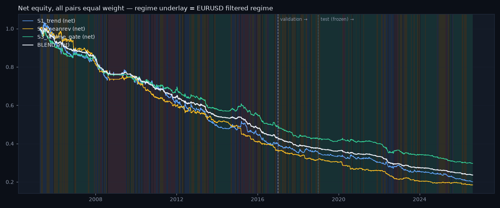
The stress lab replays three named windows (the SNB week of January 2015, the COVID crash, the whole of 2022), multiplies costs by 2, 3 and 5, adds execution lag, shocks volatility, perturbs every parameter ±30 %, and block-bootstraps the return paths. The worst case is quoted, never the average: S2 in 2022, maximum drawdown −18.3 %, worst day −2.4 %. The siren stop fired on 197 pair-days across the three windows — the overlay was flat exactly when it was supposed to be, and it still did not make the stance profitable. Nothing was re-tuned after these results.
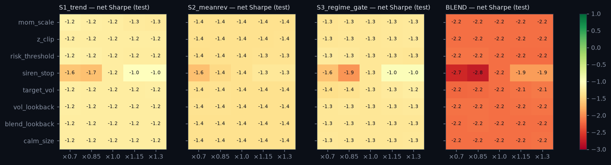
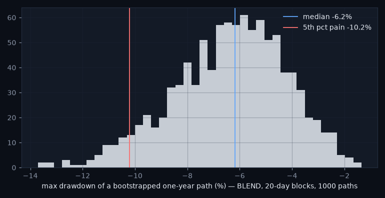
A portfolio project that reports a Sharpe of 2 invites one question: what did you do to the data? A project that reports −2.18 net, shows the cost model, the turnover, the breakeven multiplier and the stress table, and then ships the models anyway because their purpose was never to trade — that answers the question before it is asked. The product in chapter 14 is built on the risk numbers, not on a strategy.
"Don't trust us — verify." Every weekday the pipeline writes the forecasts it just published into an append-only, SHA-256 hash-chained ledger before the outcome exists. Five trading days later each row is resolved against the regimes that actually arrived and scored with the very same function the frozen test used. No row is ever edited; a refit starts a new segment; the chain head is committed to GitHub, whose timestamps notarise it for free.
One row per pair per day, newest date only — that is what makes it a forward forecast; nothing is ever backfilled, and a missed day is simply absent, forever. Each row carries the date, pair, regime, the four filtered probabilities, the change risk with its conformal band, the siren percentile, the BOCPD run length and P(change), the three votes and the agreement, the model versions, the git SHA of the code, a schema tag and a correction pointer. The hash is computed over the previous row's hash and the canonical sorted-key JSON of those fields (floats rounded to ten decimals, dates as ISO strings), so the same content always hashes the same way on any machine:
Rows written before the schema was extended keep their original hash and field set — the verifier reads the schema tag to know which fields a row's hash covers — so the chain never had to be rewritten to grow. Corrections are new rows that point at the original's hash; the original is never touched. Editing or deleting any row breaks every hash after it. Two tests prove it: tamper with a middle row and the stdlib verifier prints BROKEN; run the pipeline twice on the same day and nothing is added.
git clone … && cd fx-regime-radarpython scripts/verify_ledger.py # VALID rows=9 head=58157bd3…cat data/ledger_head.txt # compare with the hash the daily Action committed
What the chain guarantees: no row was edited, inserted or deleted after it was hashed. What it does not: that the forecasts were good — that is what the scoreboard is for.
Only rows whose five-day window has completed are scored, with the frozen test's metric code — PR-AUC, precision and recall at the frozen threshold 0.22, Brier — and never accuracy. Metrics are null (never 0) until twenty rows have resolved and both classes have appeared. Each model version is a separate segment on the scoreboard; the champion and the challenger (chapter 12) share the chain but never mix. At the time of writing the record is two days old: six champion forecasts, three challenger forecasts, none matured — the README's live column honestly reads "warming up". The table that will fill over the coming weeks is the one number in this report that nobody, including the author, can improve after the fact.
Three cheap checks run daily and write status.json with a model_stale flag. PSI per feature: ten quantile bins fitted on training rows, the last 60 days binned the same way. The textbook cut-offs (0.10 watch, 0.25 drifted) are reported but not used for the status, because a 60-day window of a slow, regime-switching feature sits at PSI 3–8 against the whole era even inside the training years — vol_20 has about three independent observations in 60 days. The status is therefore judged against the train era's own distribution of 60-day-window PSIs: above its 95th percentile is drifted, above the 75th is watch. KS: the two-sample Kolmogorov–Smirnov statistic, train era vs the last 60 days. HMM staleness: the mean per-day predictive log-likelihood of the last 60 days under each pair's saved model, compared with the training-era distribution of the same quantity; below its 5th percentile marks the model stale. A stale flag is a message to the human who owns the refit; nothing refits itself.
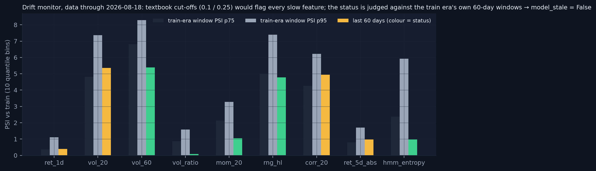
model_stale = false, shown as a badge beside "data through" on every page.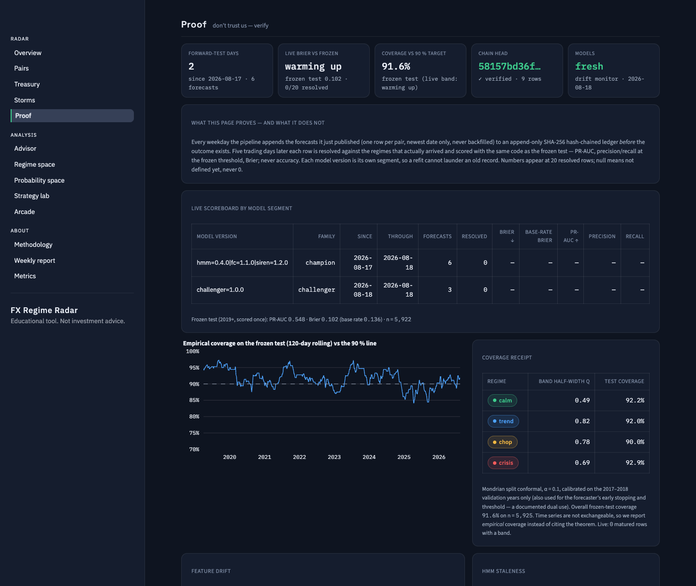
"Did you condition on the calendar?" is the first question an FX professional asks. The answer is a second forecaster — a challenger — that sees scheduled central-bank dates, cross-asset context, positioning and a better volatility estimator, and that races the frozen champion on the live ledger. The production wall stays shut: features.parquet, the bundle, the golden vectors and the Rust service were byte-identical before and after this phase.
1,227 scheduled decisions — FOMC, ECB, SNB, Bank of England, US payrolls, US CPI — from 2005 to the end of 2026 were assembled from the institutions' own published calendars (three BLS pages from web archives; the source URL is in every row). Unscheduled actions are deliberately excluded: the emergency FOMC cut of 15 March 2020 and the SNB's floor removal of 15 January 2015 are not in the file, so days_to_SNB on 15 January 2015 honestly reads 63. A countdown to a published date is knowable a year ahead; the value printed at 08:30 on CPI day is not knowable at 08:29, and its "surprise" would need point-in-time consensus data the project does not have. So the features are days_to_<type> and days_since_<type>, and nothing else from the calendar.
From FRED's free endpoint: the Fed's broad dollar index (a DXY proxy, published weekly — lagged eight days), VIX, the US 2-year yield and the daily Economic Policy Uncertainty index (each lagged one day, since they are published after the FX close); EUR/CHF from Yahoo as a context series, never a scored pair. One- and five-day changes and 20-day z-scores, standardised with training-era parameters only. CFTC positioning is the classic trap: the Traders-in-Financial-Futures report is "as of Tuesday" but released Friday afternoon — keying on the report date would let Wednesday and Thursday rows see the future. The feature is therefore keyed on the release date and a test plants a Tuesday report and asserts it is invisible until Friday. Yang–Zhang volatility — overnight, open-to-close and Rogers–Satchell range terms combined with weight k = 0.34/(1.34 + (n+1)/(n−1)) — ships as vol_20_yz; on this feed the overnight term is near zero because Yahoo's open is a start-of-day snapshot, which the ablation notes.
| model | split | PR-AUC | precision | recall | Brier | n |
|---|---|---|---|---|---|---|
| champion v1.1.0 (15 features) | val | 0.481 | 0.390 | 0.618 | 0.119 | 1,527 |
| challenger v1.0.0 (15 + 31 features) | val | 0.462 | 0.386 | 0.622 | 0.121 | 1,527 |
| champion v1.1.0 | test (once) | 0.548 | 0.452 | 0.593 | 0.102 | 5,925 |
| challenger v1.0.0 | test (once) | 0.544 | 0.421 | 0.602 | 0.103 | 5,925 |
Within noise: the calendar, the context and the positioning did not lift the five-day change-risk forecast. Four of the top fifteen gain features are extended ones (cot_eur_net, its 52-week z-score, days_since_SNB, vol_20_yz), so the model does use them — it just does not predict better with them. Both models now write to the ledger under distinct segments. The promotion rule is written down: the challenger is promoted only if its live PR-AUC beats the champion's over at least 60 matured days with Brier not worse, by a deliberate refit-path act with a new model version — never automatically, never silently.
Around each event type, −10 to +10 trading days, the mean change risk and the regime-flip frequency are compared with a band from 1,000 random non-event anchors. Most curves sit inside the band. The exception worth noting: SNB decision days flip the regime 6.7 % of the time against a placebo median of 3.5 %, and ECB/CPI days show elevated flips on the day after — the bumps are concentrated at +1, consistent with the daily bar convention. Refitting the HMM with vol_20_yz on a research copy relabels 33–69 % of days (mean agreement 44.5 %) — state identities are not robust to the volatility estimator, which is why adopting YZ into the wall is a full bundle rebuild with new goldens, scheduled as a follow-up, and not a swap.
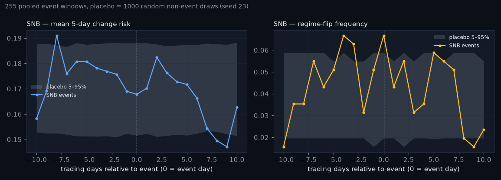
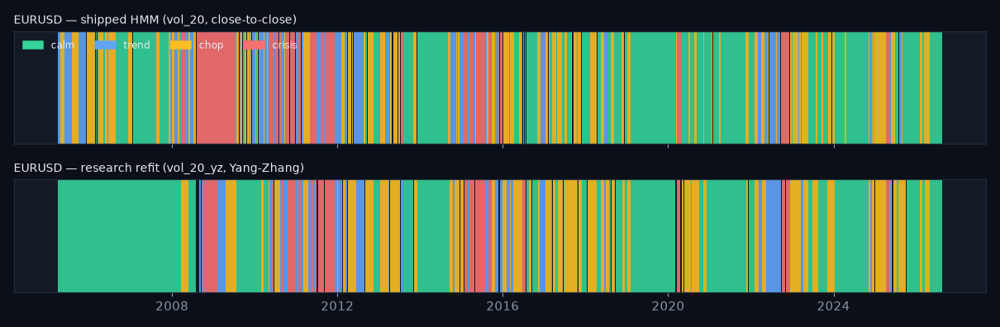
About forty official statements a year — FOMC, ECB, SNB, Bank of England — are free, timestamped and never revised. They are the one narrow exception to "no language models analysing markets", and the exception comes with a hard wall between what may touch history and what may not.
The historical leg has no memory. A frozen, SHA-256-pinned word list — the official Loughran–McDonald uncertainty list plus a cited hawkish/dovish lexicon (Apel & Blix Grimaldi; Gorodnichenko, Pham & Talavera) — scores each statement as normalised counts: hawkish, dovish, tone = (hawk − dove)/(hawk + dove + ε), uncertainty. A word list cannot know what the franc did after a 2015 letter, so it may score history. The live leg has memory. A pinned FinBERT checkpoint (ProsusAI/finbert, revision hash recorded) and — behind a gate — a frontier LLM may score only statements published after the deploy date of 17 August 2026; a guard raises before any model is even imported if a document is older, and a test proves it. Their scores go into the ledger with receipts. Neither ever enters training data.
184 statements from 2020 onward were fetched from the four banks' own sites (stdlib HTML parser, one request per second, fixed publication times: ECB 14:15 CET, SNB 09:30 CET, BoE 12:00 London, FOMC 14:00 ET) and turned into daily point-in-time features — tone, uncertainty, tone surprise relative to the bank's own last four statements, days since — known from the publication timestamp onward and merged into the challenger's matrix only. Tone surprise rather than level, because every bank has a house style (the ECB reads dovish, the Fed hawkish on this lexicon) and only a departure is news.
| bank | statements | first | last | mean tone | sd surprise |
|---|---|---|---|---|---|
| FOMC | 55 | 2020-01-29 | 2026-07-29 | +0.273 | 0.504 |
| ECB | 53 | 2020-01-23 | 2026-07-23 | −0.197 | 0.354 |
| SNB | 26 | 2020-03-19 | 2026-06-18 | −0.167 | 0.284 |
| Bank of England | 50 | 2020-01-30 | 2026-07-30 | +0.017 | 0.310 |
After any statement the next five days are more volatile than random days (EUR/USD volatility change +0.137 against a placebo band of [−0.19, −0.01]) — that is the calendar. Splitting statements at the median |tone surprise| adds +0.067 for EUR/USD and −0.032 for USD/CHF, both inside their permutation bands: no credible surprise effect yet, on a small corpus, with a simple frozen word list that saturates at ±1 on very short statements. The report says so and treats this as the benchmark the live record will be held to, not as evidence.
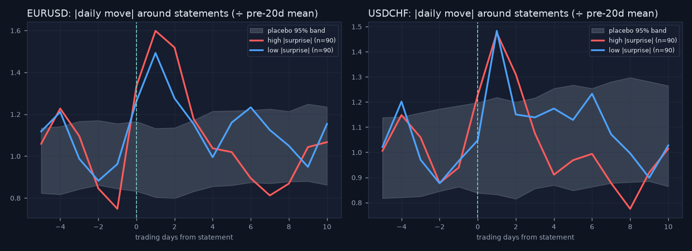
Stage 2 — LLM-scored hawkishness — proceeds only if roughly two policy cycles per bank are on the live record (≈16 statements each for Fed and ECB, 8 for the SNB) and the lexicon surprise shows a credible live event-study effect. On 19 August 2026 the live counts are 0/16, 0/16, 0/8, 0/16. The decision not to build is written down (docs/stage2-decision.md) with the numbers and the re-check condition. What was shipped is inert: a versioned prompt file, a receipts log (prompt hash and version, model string, date, raw reply), a cost cap of sixty documents a year, an ops-log entry on graceful skips, the same pre-deploy guard — and no bypass flag. No API call was made.
A language model trained on the internet has read the ending of every old story — including how markets reacted to each 2015 statement. Scoring a 2015 letter with it tests memory of the ending, not reading skill; the backtest would look superb and mean nothing. That is parametric look-ahead: the leak is not in the data pipeline but in the weights. The only honest test of a model with memory is forward, on text written after its training cut-off, with every call receipted — which is precisely what the hash-chained ledger implements. So history gets word lists, the future gets the models, and the record decides.
The single most sellable object in the system is one recurring treasurer decision answered with risk mathematics and a price tag — and never a direction call. A treasurer with a euro receivable does not ask where EUR/CHF is going; she asks how large the adverse move could be this week and whether now is a defensible moment to act.
For each pair, every overlapping 5-trading-day window in the training era (≤ 2016) is labelled by the filtered regime on the day the window starts — the regime a treasurer would have known — and its absolute log move is recorded. Value-at-risk at 95 % and 99 % is the quantile of those absolute moves; expected shortfall is the mean beyond it. Absolute moves, because receivables and payables are hurt by opposite signs and the system takes no view on the sign. Cells with fewer than 30 windows fall back to the unconditional table with a flag (USD/CHF's crisis cell, 20 windows). The table is precomputed by the pipeline into treasury_risk.json; the page does arithmetic only: amount × ES × √weeks, converted at the latest close, rounded.
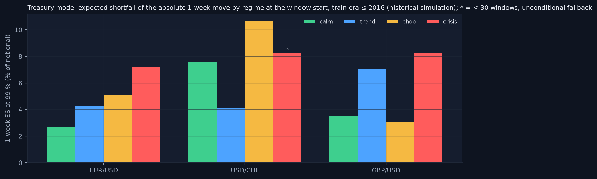
| light | deterministic rule (thresholds set on the training era, documented) | template meaning |
|---|---|---|
| hedge | crisis regime, or change risk ≥ the train-era 80th percentile (0.305) and the conformal band is wide | lock in a larger share of the exposure now with a forward |
| wait | calm regime and change risk < the train-era 40th percentile (0.090) and the band is narrow or unknown and no scheduled event within five days | hold, re-check daily; the models see a quiet week |
| ladder | everything else | split the exposure into tranches spread over the horizon |
The page's inputs are an amount, its currency, a horizon of 1–12 weeks, a home currency (CHF by default) and a confidence level. Its outputs are the light as a word with a dot, VaR and ES in the home currency, the per-regime conditioning table so the user sees the distribution behind the number, a rationale template that combines the consensus sentence, the band width and the days to the next scheduled event, and one line a treasurer can forward: "Waiting 1 more week on €800,000 risks ≈ CHF 20,000 at the 99 % level (regime: calm)." Every unit test covers every branch of the rule; a lint test bans direction words from every template; the method note carries the TODO to confirm Swiss FinSA specifics with a professional before charging.
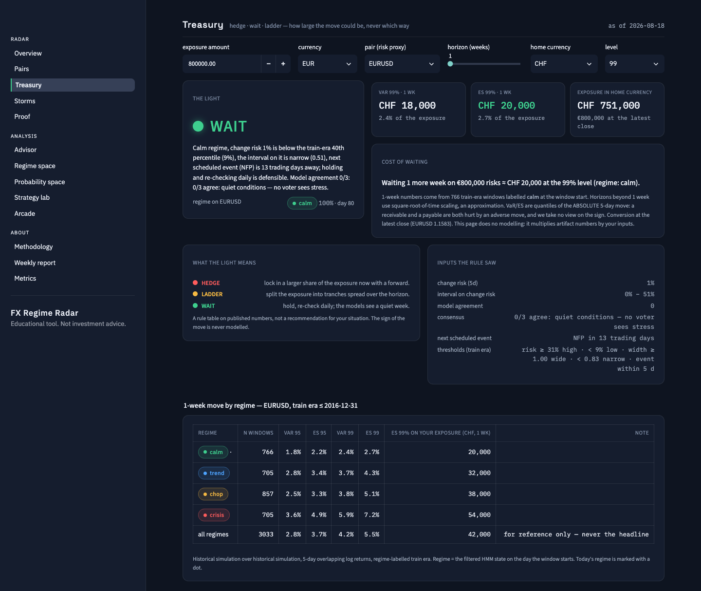
"Where is the line between risk information and advice?" Risk information is a property of the market conditioned on published numbers — the same for every reader. Advice is a statement about what you should do given your situation. The light is generic, its rule is public, and the page never stores a position. "So will EUR/CHF go down?" — "The system does not model that, by design; it estimates how large the move could be either way, and how that estimate has held up."
Hindsight bias is reading 2015 with 2026 eyes: knowing the ending makes every prior wiggle look like a warning. A causal reconstruction cuts the data at each day and asks only what was computable then. Three storms were replayed that way — chosen in advance, published whatever they showed.
For each day t in a window, the prices are truncated at t and fed through the same functions and the same loaded models the daily pipeline uses — features, forward filter, forecaster, siren, BOCPD, consensus, conformal band — keeping only the row for day t. Because every component is causal, the replay must equal the full-history artifact at t; a test asserts it to 10−9 (the measured difference is 0.0) and a second test asserts that the replay equals the live ledger rows on the dates the ledger covers. A separate implementation could quietly smooth, refit or peek; sharing the code path is what makes "the radar would have seen" a fact rather than a story. Windows were fixed in advance; no window was chosen after seeing results.
| storm (pair) | window | first alarm (risk ≥ 0.22) | first crisis label | alarm → flip | peak siren | crisis days |
|---|---|---|---|---|---|---|
| COVID (EUR/USD) | 2020-02-03 → 04-30 | 2020-02-28 (32 %) | 2020-03-20 | 15 days | 100 on 03-20 (25 days ≥ 98) | 22 / 64 |
| Credit Suisse (USD/CHF) | 2023-03-01 → 03-31 | 2023-03-13 (25 %) | none in window | — | 100 on 03-13 (2 days ≥ 98) | 0 / 23 |
| SNB floor removal (USD/CHF) | 2015-01-05 → 01-30 | 2015-01-14 (23 %) | 2015-01-16 | 2 days | 100 on 01-15 (12 days ≥ 98) | 11 / 20 |
COVID, EUR/USD. The buildup is real: change risk crossed the alarm line on 28 February at 32 %, rose to 95 % on 9 March, the siren pinned at 100, and the label turned crisis on 20 March — fifteen trading days after the first alarm. The crisis lasted 22 days and the window ended in chop. This is the radar working as designed. Credit Suisse, USD/CHF. A marginal alarm on 13 March — the Monday after Silicon Valley Bank — at 25 %, the siren at 100 for two days, and then nothing: the label never read crisis in March 2023, and the window ended in trend. The report says so; the Zurich resonance is in the date, not in the model's reaction. SNB, USD/CHF. The honest sidebar. Change risk sat at 14, 16, 20, 21 and 23 % in the five days before the floor was removed — one point over the line on the 14th, a marginal alarm at a threshold whose test precision is 45 %, not a call. The siren's 100 on the 15th is detection of an unprecedented move (the intraday range feature screamed while the start-of-day close had not yet moved), not prediction. A volatility-based radar is blind to a pegged cross: suppressed volatility is the peg's whole purpose, and a removal is by definition unscheduled, so the calendar features of chapter 12 had nothing to say either. The cross-asset context series is the response, not a cure.
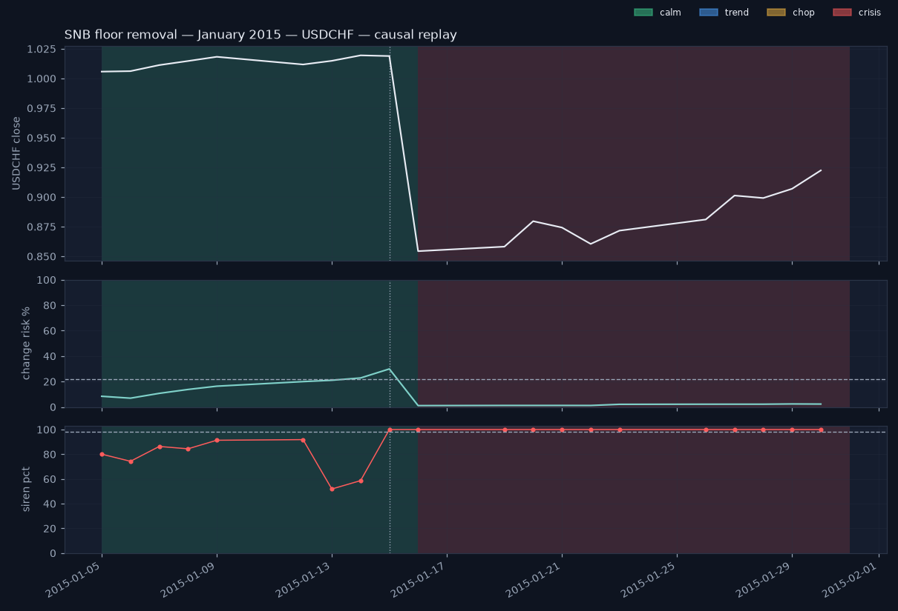
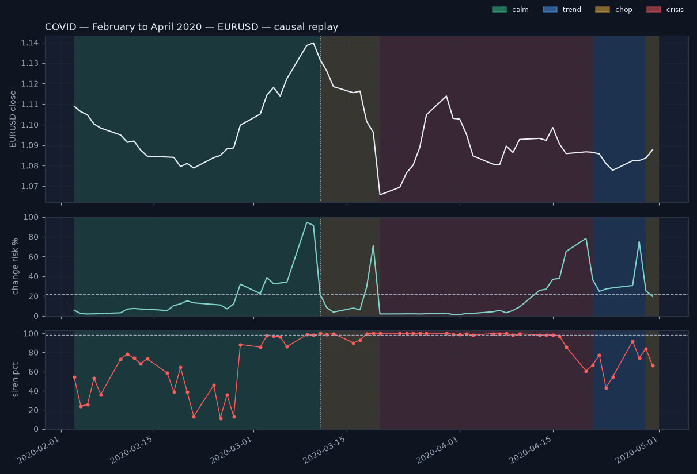
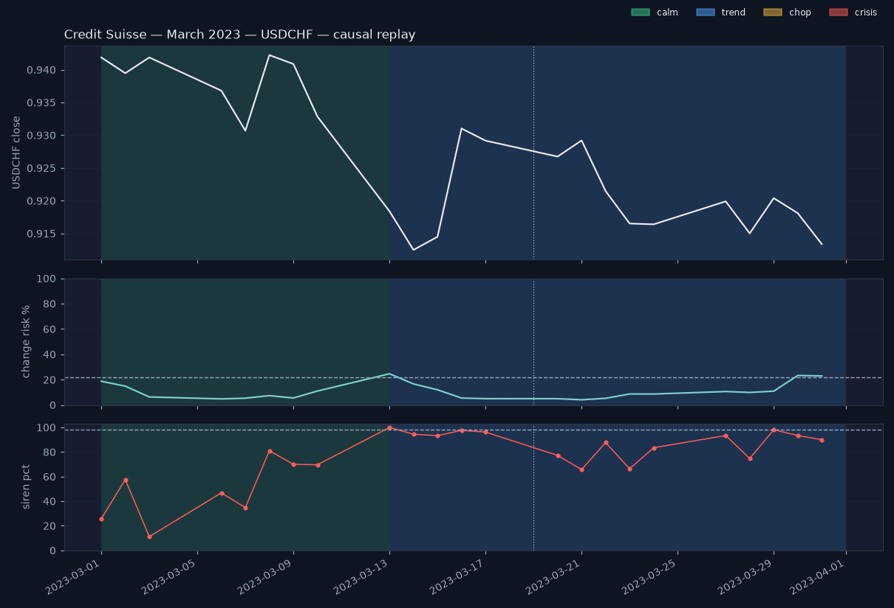
Every replay page and report carries "Causal reconstruction — not the live record" with a link to the Proof page, and states the selection rule. A pipeline stage drafts a day-by-day post-mortem into reports/postmortems/ whenever a pair enters the crisis regime live, flagged for human review — the next storm will be written up by the same code that wrote these.